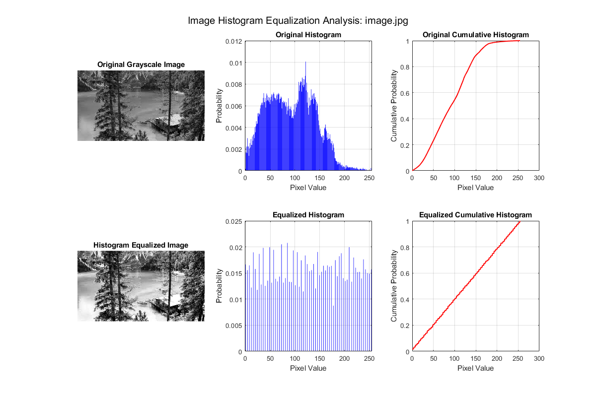

clc
clear all
close all
[filename, pathname] = uigetfile({'*.jpg;*.jpeg;*.png;*.bmp', 'Image Files (*.jpg,*.jpeg,*.png,*.bmp)';
'*.*', 'All Files (*.*)'}, ...
'Select an Image File');
if isequal(filename,0) || isequal(pathname,0)
disp('User canceled file selection');
return;
else
fullpath = fullfile(pathname, filename);
img = imread(fullpath);
end
gray_img = rgb2gray(img);
[counts, bins] = histcounts(gray_img, 256, 'Normalization', 'probability');
cdf = cumsum(counts);
eq_img = histeq(gray_img);
[eq_counts, eq_bins] = histcounts(eq_img, 256, 'Normalization', 'probability');
eq_cdf = cumsum(eq_counts);
figure('Position', [100 100 1200 800]);
subplot(2,3,1);
imshow(gray_img);
title('Original Grayscale Image');
subplot(2,3,2);
bar(bins(1:end-1), counts, 'b');
title('Original Histogram');
xlabel('Pixel Value');
ylabel('Probability');
grid on;
subplot(2,3,3);
plot(bins(1:end-1), cdf, 'r', 'LineWidth', 1.5);
title('Original Cumulative Histogram');
xlabel('Pixel Value');
ylabel('Cumulative Probability');
grid on;
subplot(2,3,4);
imshow(eq_img);
title('Histogram Equalized Image');
subplot(2,3,5);
bar(eq_bins(1:end-1), eq_counts, 'b');
title('Equalized Histogram');
xlabel('Pixel Value');
ylabel('Probability');
grid on;
subplot(2,3,6);
plot(eq_bins(1:end-1), eq_cdf, 'r', 'LineWidth', 1.5);
title('Equalized Cumulative Histogram');
xlabel('Pixel Value');
ylabel('Cumulative Probability');
grid on;
sgtitle(['Image Histogram Equalization Analysis: ' filename]);
